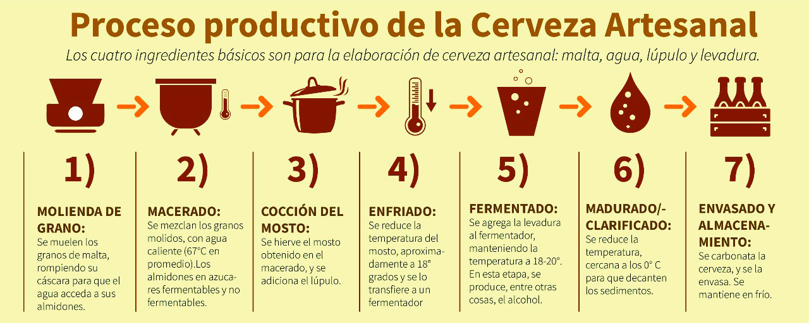

INICIO
NOSOTROS
CERVEZAS
PRODUCCION
DESCUBRIMIENTO SEMANAL
Proceso de coccion de cerveza

Dependiendo el tipo cerveza que se quiera lograr, se utilizaran diferentes maltas, levaduras, lupulo y en algunos casos agua.